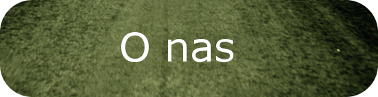
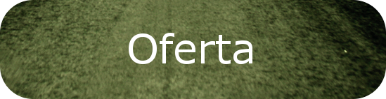
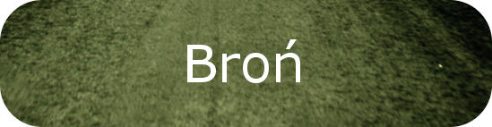
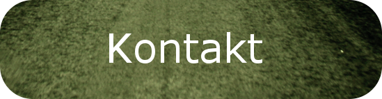

badania kierowców, operatorów maszyn, osób posiadających broń lub ubiegających się o jej posiadanie




badania kierowców, operatorów maszyn, osób posiadających broń lub ubiegających się o jej posiadanie
ANNA STANOWSKA-KARASIEWICZ
ul. 3-go Maja 25-27 (budynek Przychodni Kolejowej)
7 piętro, gabinet 84971-230 Szczecin
Rejestracja telefoniczna 665 736 830
Badania przeprowadzane są od poniedziałku do piątku. Istnieje również możliwość umówienia badań w soboty.
Na badanie należy zabrać prawo jazdy, dowód osobisty, okulary (jeżeli ktoś używa) oraz dane do wystawienia faktury.